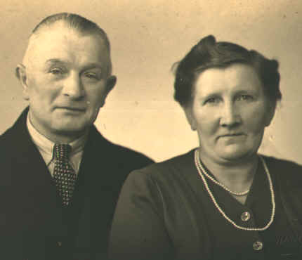
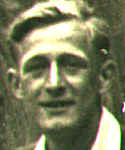
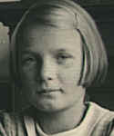
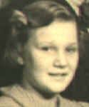
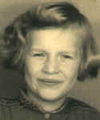
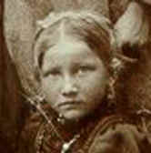
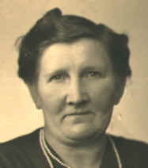
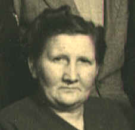

|
 Kinderen: |
||
1922 - Piet |
 1924 - Adrianus (Jos) |
1927 - Anthonie (Ton) |
1928 - Elisabeth Marrigje (Bep) |
 1932 - Pieternella Maria (Nel) |
1935 - Bastiaan (Bas) |
 1937 - Alberdina Jacoba (Dien) |
1938 - Jacob (Jac) |
 1944 - Marry |
Foto's:
|
 ± 1910 (?) |
 1948 |
 1951 |
|
|
|
|